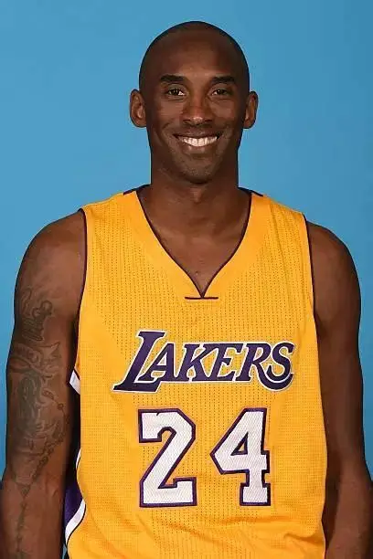

科比·布莱恩特（1978 年 8 月 23 日 — 2020 年 1 月 26 日），出生于美国宾夕法尼亚州费城，前美国职业篮球运动员，司职得分后卫（得分后卫 / 小前锋）。1996 年他在 NBA 选秀首轮第 13 顺位被夏洛特黄蜂队选中，随后交易至洛杉矶湖人队，此后 20 年职业生涯全部效力于湖人队。
科比是 NBA 历史上最伟大的得分后卫之一，与沙奎尔·奥尼尔搭档完成三连冠，又在 2009、2010 年率队两夺总冠军。2016 年 4 月 14 日，他在退役战中狂砍 60 分，为职业生涯画上圆满句号。2018 年，他主创的动画短片《亲爱的篮球》获得奥斯卡最佳动画短片奖。2020 年，他入选奈史密斯篮球名人堂。
"曼巴精神"（Mamba Mentality）是科比留给世界的精神财富，代表着对目标的极致专注、对训练的极度自律，以及面对困难时的坚韧不拔。正如他所说："那些你早起训练的时刻，那些你累到想放弃却坚持下来的时刻，那才是梦想。"
